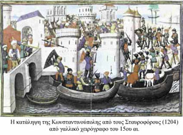

| Η Φραγκοκρατία στην Ελλάδα  Με την Δ΄ Σταυροφορία Φράγκοι, Βενετοί και Γενουάτες κατέλαβαν την Κωνσταντινούπολη (1204), μοιράστηκαν τα κατακτημένα εδάφη της βυζαντινής αυτοκρατορίας και ίδρυσαν λατινικά κράτη: Οι Φράγκοι ίδρυσαν τη Λατινική αυτοκρατορία της Κωνσταντινουπόλεως, το Βασίλειο της Θεσσαλονίκης, το Δουκάτο των Αθηνών και το Πριγκιπάτο της Αχαΐας. Οι Βενετοί και οι Γενουάτες κατέλαβαν στρατηγικής σημασίας λιμάνια και ολόκληρο το νησιωτικό χώρο. Ταυτόχρονα στις ελεύθερες περιοχές που είχαν απομείνει, δημιουργήθηκαν τα ελληνικά κράτη Αυτοκρατορία της Νικαίας, Αυτοκρατορία της Τραπεζούντας και Δεσποτάτο της Ηπείρου, τα οποία προσπάθησαν, το καθένα για τον εαυτό του, να ανακαταλάβουν τα χαμένα εδάφη και να ανασυστήσουν τη βυζαντινή αυτοκρατορία. Ο κατακερματισμός όμως των εδαφών της βυζαντινής αυτοκρατορίας, ο ανταγωνισμός Ελλήνων και Λατίνων στη Μεσόγειο, η δημιουργία σερβικού και βουλγαρικού κράτους και η θρησκευτική αντίθεση μεταξύ ορθοδόξων Ελλήνων και καθολικών κατακτητών επιτάχυναν τις διαδικασίες ανάπτυξης της ελληνικής εθνικής συνείδησης. Το 1261 ο Μιχαήλ Παλαιολόγος κατέλαβε την Κωνσταντινούπολη και εκδίωξε τους Φράγκους από την περιοχή. Το νέο κράτος γρήγορα απομακρύνθηκε από την αυτοκρατορική οικουμενική βυζαντινή παράδοση και συσπειρώθηκε γύρω από την ελληνική εθνική ιδέα, για να μπορέσει να επιβιώσει ανάμεσα στα κράτη που ήδη είχαν δημιουργηθεί στην περιοχή από πληθυσμούς της παλιάς βυζαντινής αυτοκρατορίας. Στην ανάπτυξη της ελληνικής ιδέας ιδιαίτερη είναι η συμβολή του Δεσποτάτου της Ηπείρου και του Δεσποτάτου του Μυστρά, περιοχών όπου λόγω της γεωγραφικής τους θέσης η ελληνική παράδοση ήταν πιο νωπή. |
||